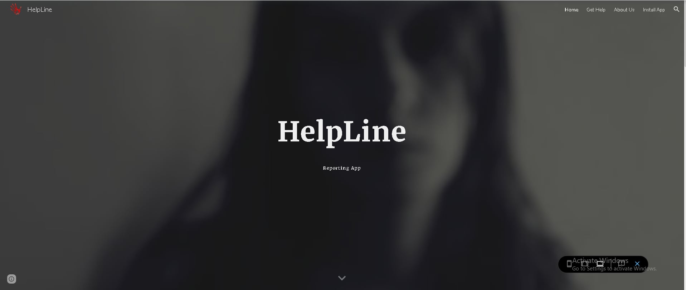
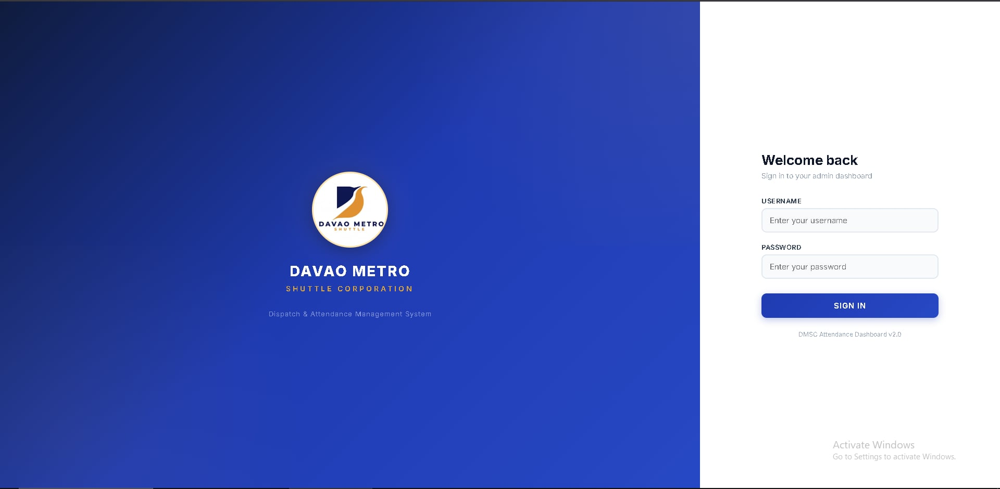

// Initializing client authorization modules...
➜ ~ cat intro.md
HI, I'M John Emmanuel Morre
Full-Stack Developer & Systems Architecture Specialist.
➜ ~ execute --connect

<ABOUT_ME />
Based out of Tibungco, I am a 22-year-old system designer and final-year BSIT undergraduate at Davao del Norte State College. My primary technical focus lies in web-based engineering—specializing in transforming complex logic and conceptual schemas into high-performance, operational architectures.
I thrive on the challenge of full-stack configuration: from constructing structural endpoints and designing automated logic routines, to formatting smooth front-end interfaces. When my development workspace is down, I switch gears to immersive computer gaming and technical reading, channels which keep my analytical thinking active and sharp.
// Core_Interests
- ■ Web Systems Architecture
- ■ Dynamic Database Logic
- ■ Competitive Gaming Analytics
- ■ UI/UX Interactive Styling
- ■ JSON Parsing & Automations
<TECH_STACK />
UI & Interactive Engineering
Database & Functional Logic
System Design & Operations
<TIMELINE_LOGS />
Lead Systems Architect
Tech Solutions Corp // Building scalable digital frameworks.
Engineered full-stack responsive pipelines, optimizing custom relational data models while improving overall application structural runtimes.
Junior Frontend Designer
Digital Labs Inc // Pixel-perfect interactive interfaces.
Collaborated on custom modern themes, writing structural script layers and handling complex layout updates for interactive platform products.
<PROJECT_REPOS />

MediTrack_System
An enterprise-grade, integrated health management and pharmaceutical inventory tracker customized specifically for the Health Services Unit of Davao del Norte State College.
Built to eliminate processing delays, the platform implements localized logic routines mapping database updates to live student tracking files. It optimizes resource allocation pipelines through structured automation, ensuring medicine stock depletion lines sync seamlessly based on campus clinical demand logs.

HelpLine_Platform
A specialized web application engineered for the reporting and documentation of cases involving Violence Against Women and their Children (VAWC).
Designed with low-overhead client architectures and private form processing nodes, this portal ensures data confidentiality while providing direct avenues for victims to seek immediate shelter and legal crisis counseling coordinates without security logging bottlenecks.

Davao_Metro_Shuttle_System
A high-performance dispatch, attendance tracking, and fleet management database gateway built for the Davao Metro Shuttle Corporation.
Implements secure session control workflows with explicit administrative validation routes. Features structural SQL indices designed to monitor personnel attendance trends, optimize live driver deployment tables, and update central corporate rosters dynamically on lightweight client interfaces.
<VERIFIED_CREDENTIALS />

AWS Cloud Architect Certification
Node Token ID: GT-AWS-9831X // Secure Encryption Protocol Layer
Validates specialized competence in cloud platform engineering. Attests to proficiency in architecting decoupled scalable microservices, secure VPC parameter boundaries, dynamic database clustering pipelines, and programmatic system resource allocation models.

Certified Systems Expert (CSE)
Node Token ID: GT-CSE-4402Y // Protocol Node Validation Tracker
Attests to foundational full-stack layout architecture expertise. Certifies advanced competency in building dynamic structural endpoint schemas, configuring server-side monitoring logic matrices, sorting relational payload datasets, and implementing runtime optimizations.